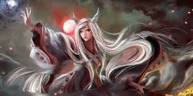

Top 5 Naruto Powerful Villain
Owner: Md Milon

Kaguya Otsutsuki
Debut Episode :
Naruto Shippuden Episode 458
Kaguya Otsusuki was revealed to be the final boss of the Naruto series in a somewhat questionable manner.
However, Kaguya was still a worthy villain and eventually set up the future of the series as well by showcasing the power of the Otsusuki clan.
Though her own story was no less tragic, the tragedies that she unleashed upon the world were truly unforgivable.
In an effort to prepare against more invading Otsusukis, Kaguya created an army of zombified Zetsus by killing people.
Upon her release from her seal, she presented herself as an unstoppable threat with her dimension-shifting powers and immense strength.
Kaguya's attacks also killed Obito Uchiha, who sacrificed himself in a bid to save Naruto.
.jpg)
Madara Ucciha
Debut Episode :
Naruto Shippuden Episode 130
Madara Uchiha's name alone is enough to send chills down the spine of any shinobi.
After facing many wars and losing several loved ones, Madara was convinced that the shinobi world would never know peace, and thus set out to create a new world filled with eternal bliss.
Madara not only served as an enemy to the first Hokage, but he also made sure to come up with a plan that would allow him to haunt many future generations of the shinobi.
Using Obito to do most of his bidding, Madara was able to reanimate himself and then proceeded to shift the tide of the Fourth Shinobi World War.
He easily dealt with the Five Kage at the time. Even Might Guy's Eighth Inner Gate form and Naruto and Sasuke's newly obtained power boosts were unable to defeat this menace.
Eventually, the powerful shinobi was betrayed by Black Zetsu.
.jpg)
Obito Ucciha
Debut Episode :
Naruto Shippuden Episode 32
Obito was a sweet and normal boy who just wanted to impress the love of his life.
However, Obito's childhood was cut short when he got crushed by a boulder during a mission.
It was later revealed that Obito was saved by none other than Madara Uchiha who went on to manipulate him into doing his bidding.
After witnessing the death of Rin, Obito became enraged and felt betrayed by the world.
.jpg)
Kabuto
Debut Episode :
Naruto Episode 23
Kabuto was an orphan turned rogue ninja, who ended up under the wing of Orochimaru.
From spying and infiltrating to killing ninjas, this character truly did it all. Kabuto even took advantage of Tsunade's trauma of blood to paralyze her.
He learned everything from Orochimaru and eventually surpassed his master in spreading chaos in the shinobi world.
Kabuto was also a key instigator of the Fourth Shinobi World War and
used the forbidden Reanimation Jutsu to bring back the dead. He was eventually made to reflect on his
ways by Itachi's unparalleled Genjutsu after which the mad genius changed sides.
.jpg)
Orochimaru
Debut Episode :
Naruto Episode 27
The big bad of the original series, Orochimaru is truly one of the best and the most terrifying villains of the Naruto franchise.
He attacked the leaf, killed the third Hokage, reanimated the first two Hokage,
betrayed his friends, abducted and experimented on Leaf ninja, and cursed Sasuke's body with a terrifying seal.
Orochimaru's atrocities knew no bounds as he cared for no one but himself.
Orochimaru even planned on taking over Sasuke's body which he eventually failed at, thanks to Itachi's efforts.
The Allied Shinobi Forces were lucky that Orochimaru had a change of heart during the Fourth World War,
or else they would not have lasted for as long as they did against Madara Uchiha.

Md Milon
Fb Id Link: https://www.facebook.com/profile.php?id=100064815848696
img src=""